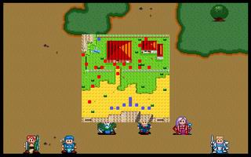
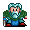
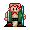
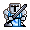
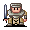
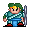

第六章 圣者

雷特米兰

克隆艾利欧巴拉多
洛加希瓦那卡里斯LV1 祭司 索尼克（NPC） （HP432,AP150,DP102,HIT97,EV16,MV3,法师杖,僧侣袍,圣光弹,再生术）
本关敌人：

LV8 罗沙 （HP560,AP198,DP102,HIT99,EV19,MV4）LV5 护卫x2 （HP420,AP130,DP78,HIT105,EV15,MV4）
LV5 特遣队长 （HP300,AP190,DP40,HIT80,EV10,MV7）

LV4 士兵x4 （HP180,AP83,DP29,HIT89,EV4,MV4）LV5 狙击手 （HP300,AP160,DP45,HIT110,EV20,MV4）

LV4 弓箭手x4 （HP180,AP128,DP20,HIT102,EV12,MV4）LV3 魔法师x3 （HP80,AP30,DP26,HIT89,EV9,MV4,火流星）
LV3 僧侣x2 （HP80,AP30,DP32,HIT83,EV3,MV4,聚合气）
胜利条件：敌人全灭
失败条件：雷特或索尼克死亡
战后报酬： $1800G/$5400G
攻略简要：
这一关的目的虽然是救圣者，不过其实圣者想死也满难的，甚至打到最后圣者还会把罗沙挂了(-_-!)，所以，骑士一开始就不要理小兵，立刻冲过去跟圣者抢经验值，护卫被打死没关系，罗沙的最后一击，一定要是我方打的，不然太浪费了，小兵方面，大概只有砍卡里斯会超过20滴(只针对我方战士)，比较强的就是特遣队长和狙击手，一开始往上冲的话，很容易被包围(虽然被包围也死不了=.=)，所以最好在下面等特遣队长接近，再一次围上去，法师会有一部分被圣者超远的圣光弹挂掉，所以重心放在弓箭手上，敌方战士的话，靠反击就摆平他了。
战后商店道具:
武器： |
防具： |
道具： |
剧情对话：
雷特:等等!你们是否觉得有些不大对劲?
米兰:我感觉到附近有人在使用法术，而且是攻击性的法术...
克隆:不好!大概是莱卡斯他们已经在攻击圣者了，赶快过去看看!
雷特:好!大家走吧!
到达山顶。
罗沙:老头子!你是否就是人家所称的圣者?
索尼克:没错。你们是奉哈奇的命令，来此捉拿我的吗?
罗沙:嘿嘿，看来你这老头还不是浪的虚名嘛!那到好，既然你都知道了，那就乖乖束手就擒吧!省得我们多费手脚。
索尼克:你这个无礼的小子!哈奇尚不敢对我如此，更何况是你这个乳臭未干的小毛头!
罗沙:可恶的老家伙!给我上!
打败战士罗沙率领的人马，救出了圣者索尼克。
索尼克:我是索尼克，也就是一般人所称的圣者，看你的长相，和亚美达二世有几分神似，可是雷特王子?
雷特:是的!请问圣者...
索尼克:别用这种称呼，我和你父亲是还不错的朋友，不算是外人。
雷特:那...那就称呼您索尼克伯父吧!索尼克伯父，你没事吧?
索尼克:不碍事。这次你们来此，可是为了救人和复国之事?
洛加:是的!请问圣者可知道我妻子的下落?
索尼克:嗯...他已经被莱卡斯带回格菲迪城了。你可知道，他是哈奇的亲妹?
洛加:什...什么?!怎么可能?当初我看到她昏倒在森林外时，就将她救了回来。十余年来，失去从前记忆的她，根本就无法说出自己的身世...难道!难道她...是哈奇派来潜伏的..
克隆:我想应该不会吧!记得当初你们成亲时，还特地告诉我，说你们要到森林深处隐居从此不问世事。怎么可能会...
洛加:如果...这是真的...那我...
米兰:洛加叔，别难过了，我相信安妮阿姨不会是那样的人的。
克隆:我想这一切的事，等见到安妮之后，就真相大白了。只是哈奇既然会带她回到格菲迪城的话，那就得从长计议了。
雷特:洛加叔，你先别妄加猜测，我也相信安妮阿姨是清白的。索尼克伯父，是否可指示今后我们复国应走的方向?
索尼克:嗯...这样吧!你先接受一场考验，之后我会视你的能力，而告诉你不同的方法。
艾利欧:为什么要这么麻烦呢?
雷特:艾利欧，我想索尼克伯父一定有他的用意。索尼克伯父，我要如何接受考验呢?
索尼克:很好!跟我来吧!
第六章完